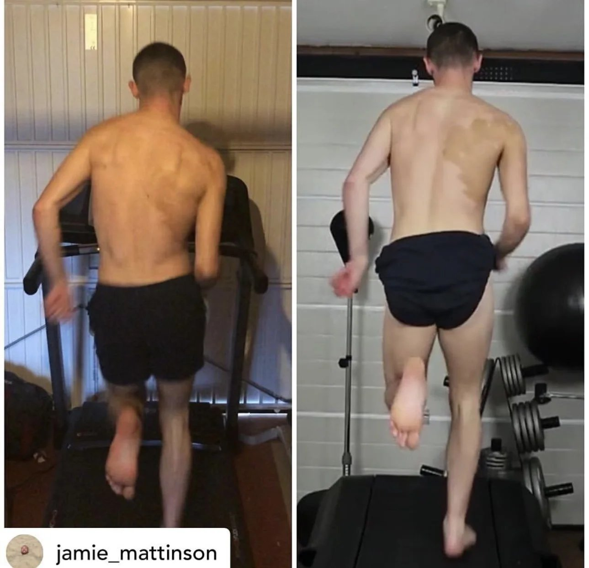
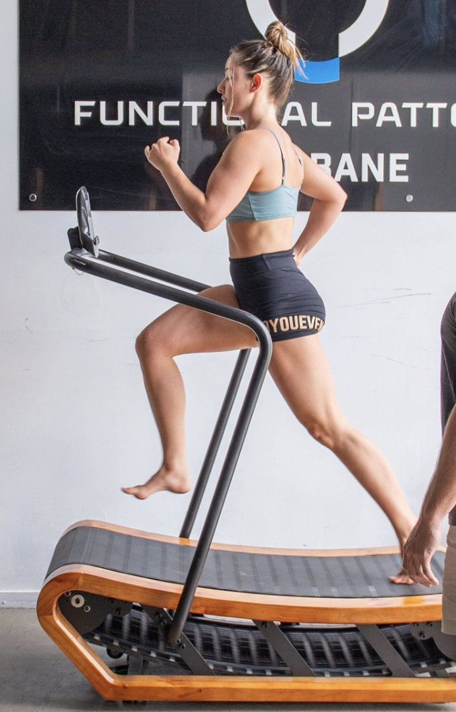
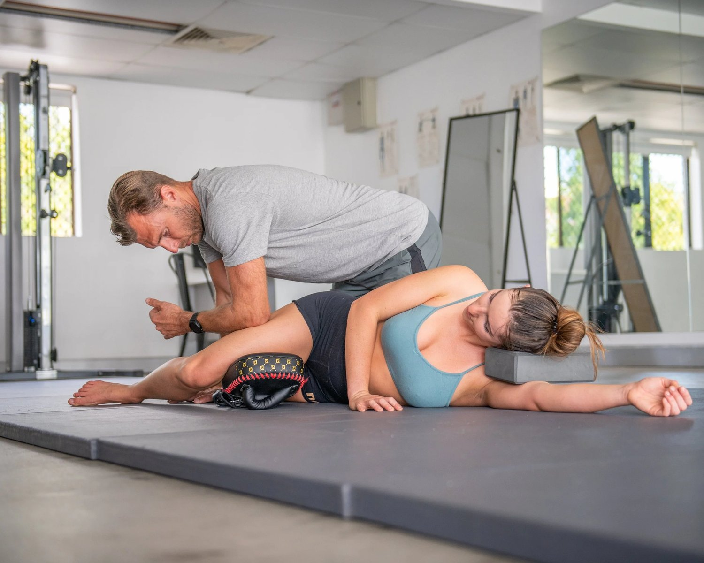

The 5 Best Things For Posture:
-
Correcting your gait cycle
-
Improving your core strength
-
Movement that integrates your muscles
-
Myo-fascial Release
-
A good stress response and rest
Correcting Your Gait Cycle
To understand how to permanently fix posture, you need to understand gait cycle.
Gait cycle is a term to describe how you walk, run, stand and move in your day to day life. Its the cycle, or sequence of movements you go through to move your body through space.
Correcting poor posture begins with understanding why your posture is poor to begin with.
Looking at your gait cycle is the perfect method for analysing WHY your posture is poor. This is because your poor movement patterns switch off/overuse the muscles that affect your posture.
Good posture therefore comes from good movement patterns.
Begin by filming and watching back your running or walking to identify any asymmetries, hikes, shifts or drops.

Improving your core strength
Improving your core strength is vital because your core is the bridge between your upper and lower body. Without a strong core, you cannot align your posture, leading to bad posture.
A major issue with posture support or using a back brace for bad posture is the passive nature. Using a posture corrector for back pain or back support for bad posture does not address the issue. In fact, posture trainers can lead to core weakness. They reduce your need to use your core to correct your posture.
Many might that doing countless crunches or planks is the key to a strong core. However, there's a crucial aspect often overlooked: intra-abdominal pressure (IAP).
Understanding how to manage this internal pressure can significantly enhance core stability and strength. This then leads to better overall fitness and reduced risk of injuries. Here’s a simpler explanation of what IAP is and why it's key for a strong core:

What is Intra-Abdominal Pressure?
Intra-abdominal pressure is essentially the pressure within your abdomen. Think of your abdomen as a balloon that houses important organs beneath your ribcage and above your pelvis.
When air fills this balloon it expands. Similarly, when the muscles of your abdominal wall engage, pressure builds up inside your abdomen. This pressure supports and stabilises your spine and core. The pressure also acts like a natural corset that keeps everything tight and secure.
A lack of intra-abdominal pressure results in a weak core.
Modulating your internal pressure is often a job for a professional. Consider reaching out to a Biomechanics Specialist at Functional Patterns Brisbane.
Movement that integrates your muscles
When learning how to improve posture, integration is wildly overlooked. An integrated body results in correct posture naturally.
So how does somebody integrate their muscles?
The answer is extremely simple. We need to stop exercising in isolated movements and start doing integrated movements. No, I'm not talking about compound movements.
Integrated movements work with your gait cycle to keep your muscles working together. A basic bicep curl is an isolated movement. Sprinting would be an example of integrated movement.
Functional Patterns only uses integrated movements in their training method and the results speak for themselves.
If you're wondering how to fix posture, integrating your muscles is the key. Muscle integration also works to strengthen the muscles in a shorter amount of time. When we begin paying attention to integration, sitting or standing correctly becomes much easier.

Myo-fascial Release
aims to rehydrate and 'release' knots or adhesions in the fascia. Fascia is your connective tissue, and when we move incorrectly, it becomes dry.
Dry fascia doesn't move about or slide against itself correctly. Imagine a layered cake with no cream.
Why is myo-fascial release so important for your posture?
When you begin your posture journey, you cannot simply "put yourself in a perfect posture." This is because your body has adhesions and dry tissue that holds you in place.
You need to hydrate and release some of these knots before you will be able to use the associated muscles.
Imagine having a very tight neck and trying to elevate your shoulders. This would likely cause pain. If you were to rehydrate and release the fascia in your neck, it would be easier to elevate your shoulders. The same principle applies to your entire body.
If you are looking for 'quick' solutions, a good myo-fascial release protocol is the best posture corrector available.

The Connection Between Stress and Posture:
We cannot brush over the effect that stress has on our posture. Stress not only causes us to adapt a worse standing and walking posture, it also dehydrates our tissue. When discussing how to fix bad posture, managing stress comes into our top 5.
Muscle Tension:
Under stress, your body’s natural response is to tense up. This is part of the "fight or flight" response, which prepares your body to either face a threat or run away from it. This response causes certain muscle groups, especially those in your neck, shoulders, and back, to contract involuntarily.
These involuntary contractions can lead your shoulders to hunch forward and your upper back to curve. Over time, maintaining this tense, hunched position can lead to a permanent change in your posture.
Breathing Patterns:
Stress often leads to shallow, rapid breathing from the chest, rather than deep, diaphragmatic breathing (from your belly).
Shallow chest breathing limits the movement of the diaphragm. It keeps the muscles in the upper body tight, contributing to a tightened chest and a hunched posture.
Biochemical Changes:
Stress triggers the release of cortisol. Cortisol is a hormone that, among other things, can lead to muscle breakdown and weakened connective tissue. It also causes fascial dehydration, or the drying out of your connective tissue.
Weaker muscles and connective tissues mean less support for maintaining a straight, healthy posture. Over time, this can lead to a stooped posture as the body is less able to support itself against gravity.
Psychological Impact:
High stress levels can make you less aware of your body and your posture. When you’re overwhelmed, maintaining a good posture is likely not your priority, leading to bad habits.
Neglecting proper posture because of stress can reinforce poor posture habits, making it harder to correct them over time.